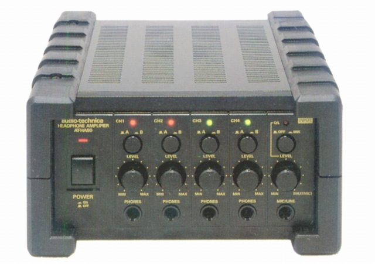
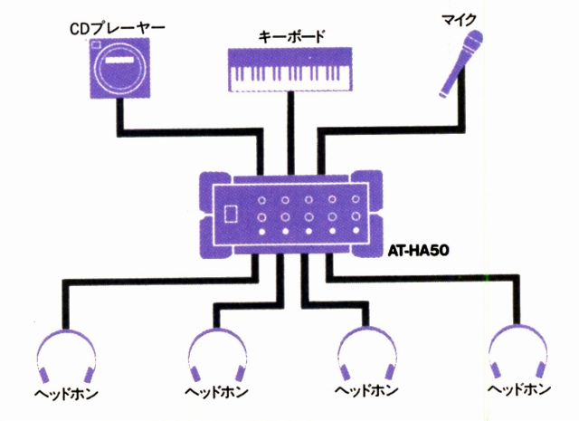

AT-HA50

■価格 34,800円 
■型式 ステレオヘッドフォンアンプ
■周波数特性 20-20,000Hz±1.5dB
■入力レベル/インピーダンス
LINE-10dBV(330mV)/33kΩ、MIKE-60〜10dBV/15kΩ
■最大出力
2000ｍW/8Ω、1500ｍW/32Ω、1000ｍW/600Ω
■入力端子 3系統（1.RCAまたは6.3�oモノラルジャック×2、2.RCA、3.MIKE/LINE可変）
■電源
100V、AC50,60Hz 消費電力 40W
■サイズ 190W×100H×234D�o
■重量 3.1kg
■発売
2000年頃
■販売終了
■備考 3台まで増設し、最大12人で同時モニター可能。
（接続例）